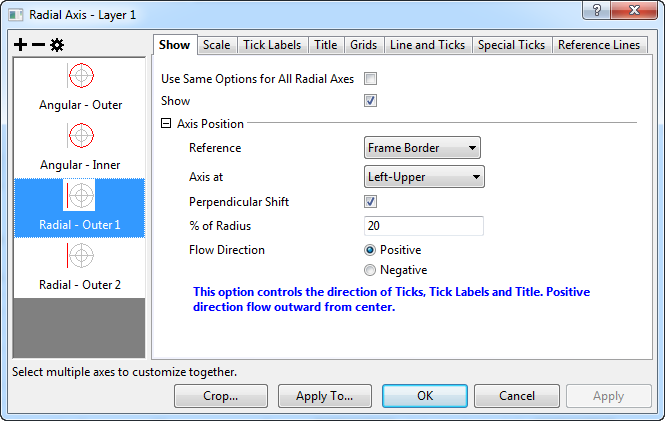
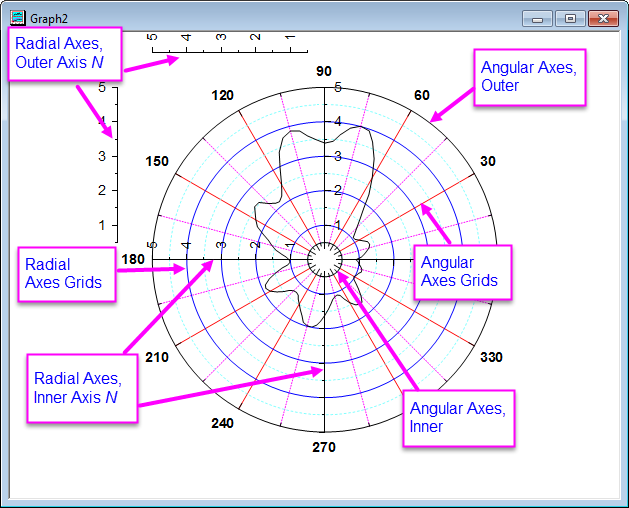

-Werte. Sie werden als ein Kreis (oder Teil eines Kreises) gezeigt. Es kann äußere und innere Winkelachsen geben. Die Anfangspositionen der inneren/äußeren Winkelachsen befinden sich jeweils bei den Werten Von/Bis der Radialachsen.
-Werte. Sie werden als ein Kreis (oder Teil eines Kreises) gezeigt. Es kann äußere und innere Winkelachsen geben. Die Anfangspositionen der inneren/äußeren Winkelachsen befinden sich jeweils bei den Werten Von/Bis der Radialachsen.
Origins Polardiagramme können sowohl "Winkel-" als auch "Radial"achsen anzeigen. Es gibt zwei Arten von Winkelachsen, innere und äußere. Sie können aus- oder eingeblendet werden und genauso wie eine konventionelle kartesische Achse benutzerdefiniert angepasst werden. Radialachsen können innerhalb oder außerhalb der Zeichnung gezeigt werden. Radialachsen sind ebenfalls vollständig benutzerdefiniert anpassbar. Achsenanpassungen werden im Dialog Achsen der Polardiagramme festgelegt. Das Bild oben zeigt einen Dialog Achsen, der Bedienelemente für mehrere innere und äußere Radialachsen anzeigt (z.B. Innere Achse 1, Äußere Achse 2). Das Diagramm unten stellt die Typen und Positionen von Origins polaren Diagrammachsen und Gitternetzen dar.
 |
| Dialog Achsen für Polardiagramme |
 |
| Terminologie der Achsen in Polardiagrammen |
Der Dialog Achsen ist ein auf Registerkarten basierender Dialog mit Bedienelementen zum benutzerdefinierten Anpassen der Achsen in Polardiagrammen. In diesem Dialog gibt es 7 Registerkarten, um die verschiedenen Attribute einer Achse separat festzulegen. Um diesen Dialog schnell zu nutzen, wählen Sie zuerst ein oder mehrere Symbole (halten Sie die Strg-Taste gedrückt, um mehrere Symbole zu markieren) im linken Bedienfeld aus. Diese/s Symbol/e kennzeichnet/n die anzupassende/n Achse/n. Wählen Sie dann im rechten Bedienfeld eine Registerkarte und verwenden Sie die Bedienelemente, um die Achseneigenschaften benutzerdefiniert anzupassen.
Die Winkelachsen sind die Achsen für die -Werte. Sie werden als ein Kreis (oder Teil eines Kreises) gezeigt. Es kann äußere und innere Winkelachsen geben. Die Anfangspositionen der inneren/äußeren Winkelachsen befinden sich jeweils bei den Werten Von/Bis der Radialachsen.
| Gleiche Optionen für Äußere-Achse und Inneres-Achse verwenden | Legen Sie fest, ob die gleichen Einstellungen für die äußeren und inneren Winkelachsen verwendet werden sollen. |
|---|---|
| Zeigen | Legen Sie fest, ob die ausgewählte Winkelachse gezeigt wird. |
| Ausrichtung |
Bestimmen Sie die Richtung und den Anfangswert der Achse für die gezeigten Winkelachsen.
|
Diese Registerkarte steuert den Achsenbereich und das Inkrement. Die meisten Bedienelemente sind identisch zu denen auf der Registerkarte Skalierung im allgemeinen Dialog der 2D-Achsen; nur der Baumknoten Definition der Einheiten ist einzigartig für den Dialog der Polarachsen.
| Einheiten |
Legen Sie die Einheiten der Winkelachsen fest, die gezeigt werden.
|
|---|---|
| Anfangswert des Kreises | Diese Option ist nur verfügbar, wenn Benutzerdefiniert für Einheiten gewählt ist. Sie wird verwendet, um den Anfangswert der benutzerdefinierten Einheit festzulegen. Der Wert wird als äquivalent zu 0 Grad betrachtet, wenn die Einheit konvertiert wird. |
| Endwert des Kreises | Diese Option ist nur verfügbar, wenn Benutzerdefiniert für Einheiten gewählt ist. Sie wird verwendet, um den Endwert der benutzerdefinierten Einheit festzulegen. Der Wert wird als äquivalent zu 360 Grad betrachtet, wenn die Einheit konvertiert wird. |
Einzelheiten zu den anderen Bedienelemente auf dieser Seite finden Sie in der Hilfe auf der Seite Skalierung im Dialog der allgemeinen 2D/3D-Achsen.
Hinweise:
|
Sie können die Beschriftung der Hilfsstriche für die äußere Winkelachse auf dieser Registerkarte benutzerdefiniert anpassen.
| Zeigen | Legen Sie fest, ob die Beschriftung der Hilfsstriche auf der ausgewählten Winkelachse gezeigt werden. |
|---|---|
| Gleiche Optionen für Innen und Außen verwenden | Legen Sie fest, ob die gleichen Einstellungen für die Beschriftung der Hilfsstriche der äußeren und inneren Winkelachsen verwendet werden sollen. |
Die untergeordnete Registerkarte Anzeige enthält die Bedienelemente für die Anzeige der Hilfsstrichsbeschriftung. Die meisten der Bedienelemente entsprechen denen im Dialog der allgemeinen 2D-Achsen. Einige Optionen sind speziell für polare Winkelachsen.
| Typ | Diese Option bestimmt den Anzeigetyp der Hilfsstrichsbeschriftung. Einzelheiten finden Sie in der Referenz für die Auswahlliste Typ. |
|---|---|
| Anzeige |
Diese Option istNICHTverfügbar, wenn der Typ auf Text aus Datensatz, Datensatz mit indizierten Hilfsstrichen oder Kategorie gesetzt ist.
Das Anzeigeformat der Hilfsstrichsbeschriftung wird bestimmt. Einzelheiten finden Sie in der Referenz für die Auswahlliste Anzeige. |
| Datensatzname |
Diese Option ist nur verfügbar, wenn der Typ auf Text aus Datensatz, Datensatz mit indizierten Hilfsstrichen oder Kategorie gesetzt ist.
Der für die Hilfsstrichsbeschriftung verwendete Datensatz wird bestimmt. Einzelheiten finden Sie in der Referenz für die Auswahlliste Datensatzname. |
| Dezimalstellen festlegen |
Diese Option ist nur dann verfügbar, wenn der Typ auf Numerisch gesetzt ist.
Sie steuert, ob die Dezimalstellen der Hilfsstrichsbeschriftung gesetzt werden. |
| Dezimalstellen | Diese Option ist nur verfügbar, wenn das Kontrollkästchen Dezimalstellen festlegen aktiviert ist und wenn der Typ auf Numerisch gesetzt ist. |
| Negative Beschriftungen als positive zeigen |
Dieses Kontrollkästchen ist nur verfügbar, wenn der Typ auf Numerisch gesetzt ist.
Sie können festlegen, ob Hilfsstrichsbeschriftung(en) mit negativen Werten in positive Werte umgewandelt werden soll(en). |
| Beschriftungsformat |
Diese Option bestimmt die Anzeigeeinheit für die Beschriftung der Hilfsstriche.
|
| Teilungsfaktor | Dies ist ein allgemeines Bedienelement für den Dialog 2D-Achsen. Einzelheiten finden Sie in der Hilfe. |
| Formel | Dies ist ein allgemeines Bedienelement für den Dialog 2D-Achsen. Einzelheiten finden Sie in der Hilfe. |
| Präfix | Dies ist ein allgemeines Bedienelement für den Dialog 2D-Achsen. Einzelheiten finden Sie in der Hilfe. |
| Suffix | Dies ist ein allgemeines Bedienelement für den Dialog 2D-Achsen. Einzelheiten finden Sie in der Hilfe. |
Die Registerkarte Format enthält Bedienelemente für das Format der Hilfsstrichsbeschriftung. Die Bedienelemente sind im Allgemeinen die gleichen wie auf der Registerkarte Format im allgemeinen Dialog der 2D-Achsen mit Ausnahme der Option Umbruch im Text.
Die Registerkarte Beschriftung der kleinen Hilfsstriche enthält Optionen, mit denen die Beschriftungen der kleinen Hilfsstriche speziell angepasst werden können. Die Bedienelemente ähneln denen der Registerkarte Beschriftung der kleinen Hilfsstriche im allgemeinen Dialog der 2D-Achsen.
Diese Registerkarte wird verwendet, um den Titel der Winkelachse festzulegen.
Das Kontrollkästchen Zeigen wird verwendet, um festzulegen, ob ein Titel für die spezifische Winkelachse angezeigt werden soll.
Die anderen Bedienelemente sind im Allgemeinen identisch zu denen der Seite Titel des allgemeinen Dialogs 2D-Achsen.
Diese Registerkarte bietet Optionen zum benutzerdefinierten Anpassen der Gitternetzlinien der Winkelachsen, d.h. die Gitternetzlinien, die vom Ursprung aus nach außen gehen.
Die Zweige Hauptgitternetzlinien und Nebengitternetzlinien können verwendet werden, um die Gitternetzlinien für die großen Hilfsstriche und kleinen Hilfsstriche festzulegen. Die meisten Bedienelemente entsprechen denen im Zweig Hauptgitternetzlinien im allgemeinen Dialog der 2D-Achsen.
Die Baumnoten Zusätzliche Linien können verwendet werden, um die gegenüberliegende Linie und die Linie bei einem festgelegten Winkelachsenwert anzuzeigen.
| Gegenüber | Legen Sie fest, ob die gegenüberliegende Linie auf der Position der inneren Winkelachse angezeigt wird. |
|---|---|
| Y = | Aktivieren Sie das Kontrollkästchen Y=, um einen Wert in das Feld einzugeben und eine Linie bei dem festgelegten Winkelachsenwert hinzuzufügen. |
Diese Registerkarte enthält Bedienelemente zum Festlegen von Linienstil und Hilfsstrichen der polaren Winkelachsen.
Auf der Seite Linie und Hilfsstriche sind drei Kontrollkästchen verfügbar, um die Optionen für Linie und Hilfsstriche festzulegen.
| Linie und Hilfsstriche zeigen | Legen Sie fest, ob Linie und Hilfsstriche auf der ausgewählten Winkelachse angezeigt werden. |
|---|---|
| Gleiche Optionen für Innen und Außen verwenden | Aktivieren Sie dieses Kontrollkästchen, um die gleichen Optionen für Linie und Hilfsstriche der äußeren und inneren Winkelachsen zu verwenden. Wenn das Kontrollkästchen aktiviert ist, ist das Kontrollkästchen Linie und Hilfsstriche zeigen auf der Seite der inneren Achse nicht verfügbar und sein Status wird automatisch auf den gleichen Status wie Linie und Hilfsstriche zeigen der Seite für die äußere Achse gesetzt. |
Der Baumknoten Linie bietet Optionen zum benutzerdefinierten Anpassen des Linienstils:
| Zeigen | Aktivieren Sie dieses Kontrollkästchen, um die Linie auf der ausgewählten Achse anzuzeigen. |
|---|---|
| Farbe | Wählen oder definieren Sie eine Farbe in dieser Auswahlliste und verwenden Sie sie als Anzeigefarbe der Achsenlinien und -hilfsstriche. |
| Dicke | Geben Sie eine gewünschte Linienstärke (in Punkten, wobei ein Punkt=1/72 Inch) für die Achse und die Hilfsstriche in dieses Kombinationsfeld ein oder wählen eine aus. |
| Achsenversatz |
Legen Sie den Versatz der entsprechenden Winkelachse fest.
|
| Prozent/Wert | Dieses Eingabefeld ist nur verfügbar, wenn der Achsenversatz auf % von Anfangsposition oder Bei Position= gesetzt ist. Diese Option wird verwendet, um den Prozentsatz/Wert des Achsenversatzes zu bestimmen. Wenn % von Anfangsposition gewählt ist, geben Sie einen Prozentwert ein. Sowohl positive als auch negative Prozentwerte sind zugelassen. Wenn Bei Position= gewählt ist, sollte es sich um einen beliebigen Wert mit Bezug zur Radialachse handeln. |
Der Zweig Hilfsstriche enthält Optionen für die benutzerdefinierte Anpassung von Richtung und Länge der Hilfsstriche. Die Optionen werden mit dem Zweig Große/Kleine Hilfsstriche im allgemeinen Dialog der 2D-Achsen gemeinsam genutzt.
Wie Achsen im kartesischen Koordinatensystem können Sie hier Referenzlinien auf der Winkelachse einer polaren Koordinate mit den Optionen der Registerkarte Referenzlinien hinzufügen.
Informationen dazu, wie die Optionen funktionieren, erfahren Sie über die Registerkarte Referenzlinien der Achsen von kartesischen Koordinaten.
Für die Winkelachse eines Polardiagramms wird die Referenzlinie als Gerade angezeigt, die beim Wert Von anfängt und beim Wert Biso der Radialachse endet.
Sie können eine oder mehr Beschriftungen für spezielle Hilfsstriche bei bestimmten Achsenpositionen auf den Winkelachsen hinzufügen.
| Gleiche Optionen für Innen und Außen verwenden | Aktivieren Sie dieses Kontrollkästchen, um die gleichen Optionen für die Hilfsstriche der äußeren und inneren Winkelachsen zu verwenden. |
|---|
Auf dieser Registerkarte Seite können Sie den Stil der speziellen Hilfsstriche auf der äußeren Winkelachse benutzerdefiniert anpassen, wenn auf der Seite Spezielle Hilfsstriche gewählt ist, dass sie angezeigt werden. Die Optionen werden mit der Registerkarte Spezielle Hilfsstriche im allgemeinen Dialog der 2D-Achsen gemeinsam genutzt.
Die Radialachsen können innerhalb und außerhalb des Polardiagramms gezeigt werden. Innere Achsen führen strahlenförmig von der Mitte weg. Sie werden als Innere Achse n bezeichnet. Äußere Achsen wreden außerhalb des Rahmens des Polardiagramms gezeichnet und als Äußere Achse n bezeichnet.
Sie können zu jedem großen Hilfsstrich auf den Winkelachsen Radialachsen hinzufügen und diese alle gleichzeitig benutzerdefiniert anpassen.
Für Radialachsen können Sie die Anfangskonfiguration der Radialachsen mit zwei Methoden bestimmen:
Dieser Dialog wird verwendet, um die Konfiguration für alle Radialachsen schnell festzulegen. Die aktuelle Konfiguration der Radialachsen geht verloren, wenn eine neue Konfiguration angewendet wird.
In diesem Dialog werden die Achsen innerhalb des Polardiagramms und die Achsen außerhalb des Polardiagramms in separaten Zweigen gesteuert.
| Achsen innerhalb Polar | Dieses Kontrollkästchen wird verwendet, um festzulegen, ob die Radialachsen innerhalb des Polardiagramms gezeigt werden. Wenn es deaktiviert ist, werden alle anderen Bedienelemente in diesem Baumknoten deaktiviert und es werden keine Achsen innerhalb des Polardiagramms gezeigt, d.h. keine Inneren Achsen. |
|---|---|
| Positionstyp |
Bestimmen Sie den Positionstyp von allen Inneren Achsen.
|
| Winkelliste | Diese Auswahlliste ist nur verfügbar, wenn die Option Winkel für den Positionstyp gewählt ist. Sie können eine Standardwinkelliste für die Radialachsen oder Benutzerdefiniert wählen und dann eine benutzerdefinierte Winkelliste im Eingabefeld Wert (Winkeleinheiten) erstellen. |
| Wert (Winkeleinheiten) | Dieses Eingabefeld ist nur verfügbar, wenn die Option Benutzerdefiniert für Winkelliste gewählt wurde. Winkeleinheiten wird entsprechend der Einheiten geändert, die auf der Registerkarte Winkelskalierung definiert sind. Sie können die Position der Radialachsen definieren, indem Sie einen oder mehrere Winkelwerte in Winkelachsen eingeben. Verwenden Sie "Leerzeichen" als Trennzeichen. |
| Liste der Uhrzeiten | Diese Auswahlliste ist nur verfügbar, wenn die Option Uhrzeit für den Positionstyp gewählt ist. Sie können die Standardliste der Uhrzeiten für die Radialachsen wählen. |
Es gibt vier Auswahllisten in diesem Zweig: Links, Rechts, Oben und Unten. Jede bestimmt, ob Achsen in dem entsprechenden Rahmen gezeigt werden, z.B. wird die Auswahlliste Links für die Radialachsen an der linken Linie des Rahmenrands verwendet.
Diese Auswahllmenüs haben ähnliche Optionen:
| Kein | Es werden keine Radialachsen an diesem Rahmenrand angezeigt. |
|---|---|
| Oben oder Links | Es wird nur die obere (für Links und Rechts) oder linke (für Oben und Unten) Radialachse an diesem Rahmenrand angezeigt. |
| Unten oder Rechts | Es wird nur die untere (für Links und Rechts) oder rechte (für Oben und Unten) Radialachse an diesem Rahmenrand angezeigt. |
| Oben & Unten oder Links & Rechts | Es wird die obere und untere (für Links und Rechts) oder die linke und rechte (für Oben und Unten) Radialachse an diesem Rahmenrand angezeigt. |
Für jede Auswahlliste gibt es ein zusätzliches Eingabefeld %s of Radius, wenn die Option Kein NICHT gewählt ist. Sie können hier einen Wert eingeben, um den Versatz der entsprechenden Radialachse(n) in Hinblick auf die Endposition der Radiuslinie zu definieren, die senkrecht zu dieser Radialachse steht.
Auf der Seite Äußere Achse n oder Innere Achse n oder Hauptachsen können Sie entscheiden, ob und wo die Radialachsen gezeigt werden sollen.
Das Kontrollkästchen Zeigen gibt Ihnen die Möglichkeit festzulegen, ob die ausgewählte Radialachse angezeigt werden soll.
Der Zweig Achsenposition enthält Optionen, mit denen Sie entscheiden können, wo die ausgewählte Radialachse gezeigt werden soll:
| Referenz |
Diese Auswahlliste wird verwendet, um zu bestimmen, ob die Radialachsen innerhalb oder außerhalb des Polardiagramms gezeigt werden sollen und ob für die innere Achse die Option Winkelachsen oder Richtung der Uhrzeit als Referenz verwendet werden soll.
|
|---|---|
| Winkel bei |
Dieses Auswahlliste ist nur verfügbar, wenn die Option Winkelachsen für unter Referenz gewählt ist. Sie wird verwendet, um die Achsenposition mit Hilfe des Winkelwerts bei den Winkelachsen festzulegen.
|
| Wert (Winkeleinheiten) |
Dieses Eingabefeld ist verfügbar, wenn die Auswahlliste Winkel bei auf % von Anfangswinkel oder % von Endwinkel oder Winkel bei gesetzt ist. Die Winkeleinheiten werden entsprechend der Einheiten geändert, die auf der Registerkarte Winkelskalierung definiert sind.
|
| Uhrzeiten | Diese Auswahlliste ist nur verfügbar, wenn die Option Ziffernblatt unter Referenz gewählt ist. Sie enthält 4 Optionen, um die Radialachse auf die Richtung 3, 6, 9 bzw. 12 Uhr zu setzen. Die Achsenposition ändert sich nicht mit der Winkelachse. |
| Winkel bei | Dieses Auswahlmenü ist nur verfügbar, wenn die Option Rahmengrenze für Referenz ausgewählt wurde. Sie verfügt über 8 Optionen, um die Radialachsen bei spezifischen Positionen außerhalb des Rahmens zu positionieren. |
| Senkrechte Verschiebung | Dieses Kontrollkästchen wird verwendet, um festzulegen, ob der Versatz in senkrechter Richtung durchgeführt werden soll. |
| % von Radius | Diese Option ist nur verfügbar, wenn Senkrechte Verschiebung aktiviert ist. Dieser Wert wird verwendet, um den Versatz in Prozent der Radialachse zu definieren. Genauso verhält es sich mit dem Eingabefeld %s von Radius im Dialog Konfiguration der Radialachsen. |
| Fließrichtung | Diese Auswahl wird verwendet, um die Richtung von Hilfsstrichen, Hilfsstrichsbeschriftung und Titel festzulegen. Sie hängt mit der Ausrichtung der Winkelachse und dem Referenztyp der Radialachse zusammen. In dem Dialog wird ein Hinweis angezeigt, der die positive Fließrichtung unter den aktuellen Einstellungen angibt. Die negative Richtung ist nur eine Umkehrung der positiven Richtung. |
Diese Registerkarte bietet Bedienelemente, mit denen Sie Achsenbereich, Achsentyp, Hilfsstrichspositionen etc. aller Radialachsen bestimmen können. Sie sind im Grunde die gleichen wie auf der Registerkarte Skalierung im Dialog der 2D-Achsen außer ein Kontrollkästchen, das sich ausschließlich auf Radialachsen in Polardiagrammen bezieht:
| Zentrum bei (%) |
Geben Sie einen Prozentwert des Abstands zwischen Von und Bis ein, um den Abstand vom Zentrumswert bis zum Wert Von festzulegen. Wenn zum Beispiel die Radialachse von 50 bis 100 reicht und Sie das Zentrum bei 40 setzen möchten, dann können Sie diese Prozentangaben eingeben: Der Standardwert ist 0. Dies bedeutet, dass das Zentrum des Polardiagramms auf den Ursprung (r=0) festgelegt wird, unabhängig von dem Wert Von der Radialachsen. |
|---|
Hinweis:
Siehe das zirkuläre Dendrogramm:
Auf dieser Registerkarte können Sie die Beschriftung der Hilfsstriche der spezifischen Radialachse benutzerdefiniert anpassen:
| Anzeige | Diese Registerkarte bietet Bedienelemente für die Anzeige der Hilfsstrichsbeschriftungen. Diese sind identisch mit den Bedienelementen der Anzeige der Hilfsstrichsbeschriftung im allgemeinen Dialog der 2D-Achsen. |
|---|---|
| Format | Diese Registerkarte bietet Bedienelemente zur benutzerdefinierten Anpassung des Beschriftungsformat der Hilfsstriche. Die Bedienelemente sind im Allgemeinen die gleichen wie das Format der Hilfsstrichsbeschriftungen im allgemeinen Dialog der 2D-Achsen mit Ausnahme der Option Umbruch im Text. |
| Beschriftung kleiner Hilfsstriche | Die Registerkarte enthält Optionen, mit denen die Beschriftungen der kleinen Hilfsstriche speziell angepasst werden können. Die Bedienelemente ähneln denen der Registerkarte Beschriftung der kleinen Hilfsstriche im allgemeinen Dialog der 2D-Achsen. |
Diese Registerkarte wird verwendet, um den Titel der Radialachse festzulegen.
Das Kontrollkästchen Zeigen wird verwendet, um festzulegen, ob ein Titel für die spezifische Radialachse angezeigt werden soll.
Die anderen Bedienelemente sind im Allgemeinen identisch zu denen der Seite Titel des allgemeinen Dialogs 2D-Achsen.
Diese Seite bietet Optionen zum benutzerdefinierten Anpassen der Gitternetzlinien der Radialachsen, d.h. den konzentrischen Kreisen um die Winkelachsen.
Haupt- und Nebengitternetzlinien können separat benutzerdefiniert angepasst werden in den Zweigen Hauptgitterlinien bzw. Nebengitternetzlinien. Die Bedienelemente dieser zwei Zweige werden auch von den entsprechenden Knoten der Registerkarte Gitternetze des allgemeinen Dialogs der 2D-Achsen genutzt.
Diese Registerkarte wird verwendet, um den Stil von Linie und Hilfsstrichen der Radialachse benutzerdefiniert anzupassen.
Das Kontrollkästchen Zeigen wird verwendet, um festzulegen, ob Linie und Hilfsstriche für die spezifische Radialachse angezeigt werden sollen.
Die anderen Bedienelemente sind im Allgemeinen identisch zu den Bedienelementen der Seite Linie und Hilfsstriche des Standarddialogs der 2D-Achsen.
|
Seit Origin 2023 sind die Enden von Achsenlinien für radiale (aber nicht winklige) Achsen standardmäßig quadratisch und werden von der Systemvariable @LCAL gesteuert. |
Wie Achsen im kartesischen Koordinatensystem können Sie Referenzlinien auf der Radialachse einer polaren Koordinate mit den Optionen der Registerkarte Referenzlinien hinzufügen.
Informationen dazu, wie die Optionen funktionieren, erfahren Sie über die Registerkarte Referenzlinien der Achsen von kartesischen Koordinaten.
Für die Radialachse eines Polardiagramms wird die Referenzlinie als Gerade angezeigt, die beim Wert Von der Winkelachse anfängt und beim Wert Bis endet.
Diese Registerkarte wird verwendet, um spezielle Hilfsstrichsbeschriftungen auf den Radialachsen hinzuzufügen/zu entfernen/zu bearbeiten.
Die Bedienelemente sind identisch zu den Bedienelementen der Seite Spezielle Hilfsstriche des Dialogs der Winkelachsen.
Klicken Sie auf Beschneiden, um den Dialog Verschiedenes zu öffnen. Diagrammelemente außerhalb des definierten Rechtecks werden aus dem Diagramm entfernt.
| Aktivieren | Aktivieren Sie dieses Kontrollkästchen, um die Funktion des Abschneidens zu aktivieren. Nur wenn dieses Kästchen aktiviert ist, werden auch die anderen Bedienelemente auf dieser Seite aktiviert. |
|---|---|
| Einheiten |
Wählen Sie die Einheit, um die Dimension des Rechtecks zu definieren.
|
| Links | Dieses Eingabefeld wird verwendet, um die Position der linken Linie des Rechtecks zu definieren. |
| Oben | Dieses Eingabefeld wird verwendet, um die Position der oberen Linie des Rechtecks zu definieren. |
| Breite | Dieses Eingabefeld wird verwendet, um die Breite des Rechtecks zu definieren. |
| Höhe | Dieses Eingabefeld wird verwendet, um die Höhe des Rechtecks zu definieren. |
Klicken Sie auf Anwenden auf, um den Dialog Anwenden auf zu öffnen. Dieser Dialog wird durch Klicken auf die Schaltfläche Anwenden auf... unten im Dialog Achsen geöffnet. Sie können das Format der Hilfsstrichsbeschriftungen, Linie und Hilfsstriche sowie Gitternetzlinien festlegen, um diese von der Quellachse auf die Zielachse zu übertragen.
Dieser Dialog funktioniert wie die Seite Auf andere anwenden im allgemeinen Dialog der Achsen von 2D-Diagrammen.